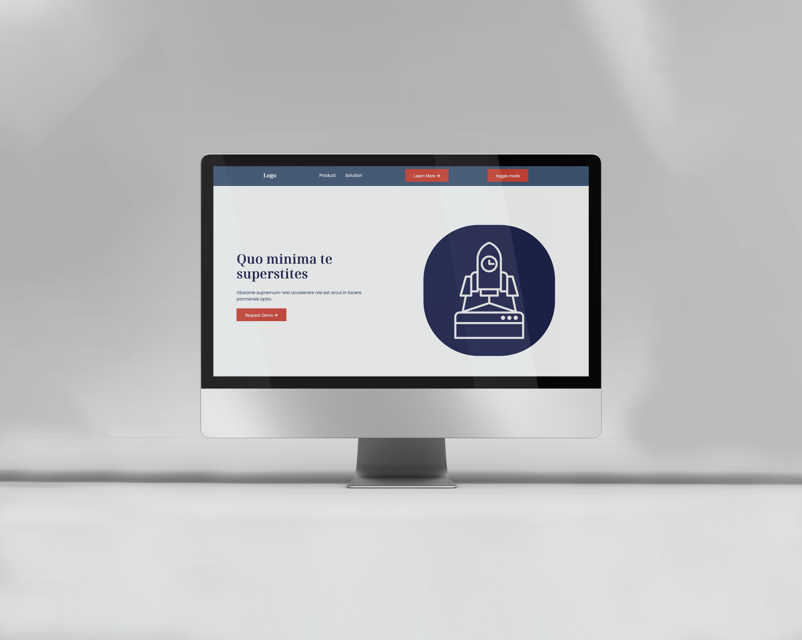

What have I learned?
I have learned about some amazing tools that help create a nice simple color palette. We also learned about how to import frameworks and make animations with js.
Tobias Roland
The assignment focuses on applying a color palette and animations to a mockup landing page design. Divided into three parts, the first part involves creating a color palette using Huemint and validating contrast using Adobe's Contrast Analyzer. Students should then apply the palette to the website using CSS variables and experiment with it. The second part involves creating a dark theme, and the third part involves adding animations to the design. Students can follow the tutorial on "Dark Theme using CSS Variables and Local Storage".
I have learned about some amazing tools that help create a nice simple color palette. We also learned about how to import frameworks and make animations with js.